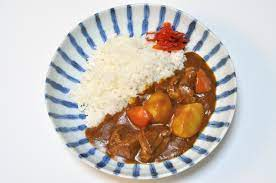

Curry Recipe

Description
Japanese-style curry, also known as "kare" or "kare-raisu," is a popular dish in Japan that has its roots in Indian cuisine. It is a thick and hearty curry dish characterized by its rich and savory flavors. Japanese curry differs from Indian curry in terms of taste and texture.
Typically, Japanese curry is made by stewing a combination of vegetables, meat (such as beef, chicken, or pork), and aromatic spices in a roux-based sauce. The sauce is made by cooking onions, garlic, and other spices until fragrant, then adding flour and curry powder to create a thickened base. This base is then simmered with vegetables like potatoes, carrots, and onions until they are tender and infused with the curry flavors.
Japanese curry has a mild and slightly sweet taste compared to its spicier Indian counterparts. It is often served with steamed rice and can be customized with various toppings such as crispy fried cutlets (tonkatsu), soft-boiled eggs, or pickled vegetables. The comforting and satisfying nature of Japanese curry has made it a beloved comfort food in Japan, enjoyed by people of all ages.
Ingredients
- 1 to 2 tablespoons vegetable oil
- onion, thinly sliced
- 2 to 3 cloves of garlic, minced
- 1 to 2 tablespoons curry powder (Japanese curry roux)
- 1 to 2 tablespoons flour
- 500 grams (1 pound) meat (beef, chicken, or pork), cut into bite-sized pieces
- 2 to 3 carrots, sliced
- 2 to 3 potatoes, peeled and cubed
- 1 to 2 cups water or broth
- 1 to 2 tablespoons soy sauce
- 1 to 2 tablespoons Worcestershire sauce
- Salt and pepper, to taste
- Optional toppings: pickles, soft-boiled eggs, fried cutlets (tonkatsu), or green onions
Steps
- Heat vegetable oil in a large pot or deep pan over medium heat.
- Add sliced onions and minced garlic to the pot and sauté until they become translucent and aromatic
- Sprinkle curry powder over the onions and garlic, and stir to coat them evenly.
- Add flour to the pot and continue stirring for a minute or two, allowing the flour to cook and form a thick paste.
- Now, add the meat (beef, chicken, or pork) to the pot and cook until it is lightly browned on all sides.
- Add sliced carrots and cubed potatoes to the pot, and stir them together with the meat and onion mixture.
- Pour water or broth into the pot, ensuring that the ingredients are fully submerged.
- Bring the mixture to a boil, then reduce the heat to low and let it simmer for about 20-30 minutes, or until the vegetables are tender and the flavors have melded together.
- Stir in soy sauce and Worcestershire sauce, adjusting the amount to your taste preference.
- Season with salt and pepper to taste.
- Continue simmering for a few more minutes to allow the flavors to further develop.
- Serve the Japanese curry over steamed rice and garnish with optional toppings such as pickles, soft-boiled eggs, fried cutlets (tonkatsu), or green onions.